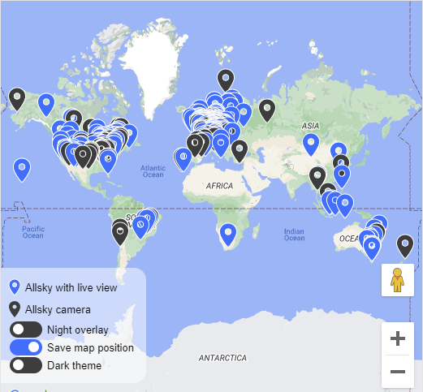

Overview
Starting with version 0.8.3.3 of Allsky, you can automatically have your allsky camera(s) added to the global Allsky Map . This map shows the location of all known allsky cameras as well as basic information about them. Click on the image below to go to the Allsky Map.
To have your camera added, enable the Show On Map setting in the Allsky Map Settings section of the WebUI. If you don't see that section your version of the WebUI (and probably Allsky itself) is too old and needs to be updated. If your camera is already on the map you can remove it by turning the setting off. You can also update your information by changing any of the map-related fields.
Once you've enabled the Show On Map setting, your map information will be automatically sent to the map server every other day so it can distinguish current data from old, expired data.
All these changes take effect immediately - no human intervention required!
Clicking on a pin on the map displays information about the camera and if the owner has set their image URL, you'll see the last image as well. And if the owner set their website URL you can click on the image to go to their Allsky website.
See the "Allsky Settings" Page section of the Allsky Settings page for a description of each map-related setting in the WebUI.